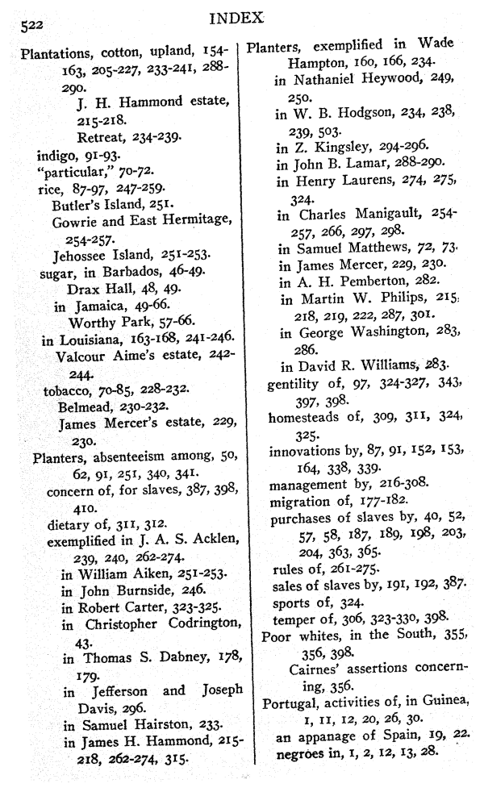

<pb n="522"/>
<cb n="1"/>
<item><p>Plantations,</p>
<list>
<item><p>cotton,</p>
<list>
<item><p>upland, 154– |
163, 205–227, 233–241, 288– |
290.</p></item>
<item><p>J. H. Hammond estate, |
215–218.</p></item>
<item><p>Retreat, 234–239.</p></item>
</list>
</item>
<item><p>indigo, 91–93.</p></item>
<item><p>"particular," 70–72.</p></item>
<item><p>rice, 87–97, 247–259.</p>
<list>
<item><p>Butler's Island, 251.</p></item>
<item rend="hang"><p>Gowrie and East Hermitage, |
254–257.</p></item>
<item><p>Jehossee Island, 251–253.</p></item>
</list>
</item>
<item><p>sugar,</p>
<list>
<item><p>in Barbados, 46–49.</p>
<list>
<item><p>Drax Hall, 48, 49.</p></item>
</list>
</item>
<item><p>in Jamaica, 49–66.</p>
<list>
<item><p>Worthy Park, 57–66.</p></item>
</list>
</item>
</list>
</item>
<item><p>in Louisiana, 163–168, 241–246.</p>
<list>
<item rend="hang"><p>Valcour Aime's estate, 242– |
244.</p></item>
</list>
</item>
<item><p>tobacco, 70–85, 228–232.</p>
<list>
<item><p>Belmead, 230–232.</p></item>
<item rend="hang"><p>James Mercer's estate, 229, |
230.</p></item>
</list>
</item>
</list>
</item>
<item><p>Planters,</p>
<list>
<item rend="hang"><p>absenteeism among, 50, |
62, 91, 251, 340, 341.</p></item>
<item rend="hang"><p>concern of, for slaves, 387, 398, |
410.</p></item>
<item><p>dietary of, 311, 312.</p></item>
<item><p>exemplified</p>
<list>
<item rend="hang"><p>in J. A. S. Acklen, |
239, 240, 262–274.</p></item>
<item><p>in William Aiken, 251–253.</p></item>
<item><p>in John Burnside, 246.</p></item>
<item><p>in Robert Carter, 323–325.</p></item>
<item rend="hang"><p>in Christopher Codrington, |
43.</p></item>
<item rend="hang"><p>in Thomas S. Dabney, 178, |
179.</p></item>
<item rend="hang"><p>in Jefferson and Joseph |
Davis, 296.</p></item>
<item><p>in Samuel Hairston, 233.</p></item>
<item rend="hang"><p>in James H. Hammond, 215– |
218, 262–274, 315.</p></item>
</list>
</item>
</list>
</item>
<cb n="2"/>
<item><p>Planters,</p>
<list>
<item><p>exemplified</p>
<list>
<item rend="hang"><p>in Wade |
Hampton, 160, 166, 234.</p></item>
<item rend="hang"><p>in Nathaniel Heywood, 249, |
250.</p></item>
<item rend="hang"><p>in W. B. Hodgson, 234, 238, |
239, 503.</p></item>
<item><p>in Z. Kingsley, 294–296.</p></item>
<item><p>in John B. Lamar, 288–290.</p></item>
<item rend="hang"><p>in Henry Laurens, 274, 275, |
324.</p></item>
<item rend="hang"><p>in Charles Manigault, 254– |
257, 266, 297, 298.</p></item>
<item><p>in Samuel Matthews, 72, 73.</p></item>
<item><p>in James Mercer, 229, 230.</p></item>
<item><p>in A. H. Pemberton, 282.</p></item>
<item rend="hang"><p>in Martin W. Philips, 215, |
218, 219, 222, 287, 301.</p></item>
<item rend="hang"><p>in George Washington, 283, |
286.</p></item>
<item><p>in David R. Williams, 283.</p></item>
</list>
</item>
<item rend="hang"><p>gentility of, 97, 324–327, 343, |
397, 398.</p></item>
<item rend="hang"><p>homesteads of, 309, 311, 324, |
325.</p></item>
<item rend="hang"><p>innovations by, 87, 91, 152, 153, |
164, 338, 339.</p></item>
<item><p>management by, 216–308.</p></item>
<item><p>migration of, 177–182.</p></item>
<item rend="hang"><p>purchases of slaves by, 40, 52, |
57, 58, 187, 189, 198, 203, |
204, 363, 365.</p></item>
<item><p>rules of, 261–275.</p></item>
<item><p>sales of slaves by, 191, 192, 387.</p></item>
<item><p>sports of, 324.</p></item>
<item><p>temper of, 306, 323–330, 398.</p></item>
</list>
</item>
<item><p>Poor whites,</p>
<list>
<item rend="hang"><p>in the South, 355, |
356, 398.</p></item>
<item rend="hang"><p>Cairnes' assertions concern- |
ing, 356.</p></item>
</list>
</item>
<item><p>Portugal,</p>
<list>
<item rend="hang"><p>activities of, in Guinea, |
1, 11, 12, 20, 26, 30.</p></item>
<item><p>an appanage of Spain, 19, 22.</p></item>
<item><p>negroes in, 1, 2, 12, 13, 28.</p></item>